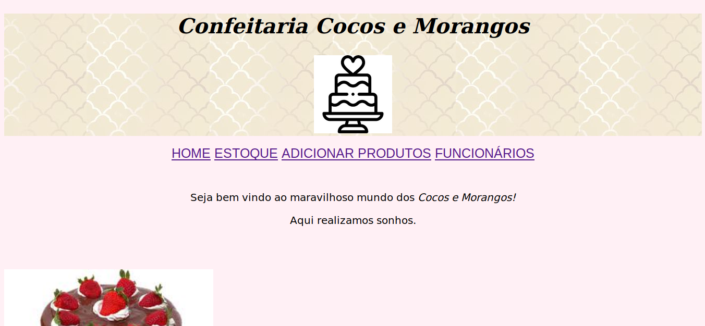
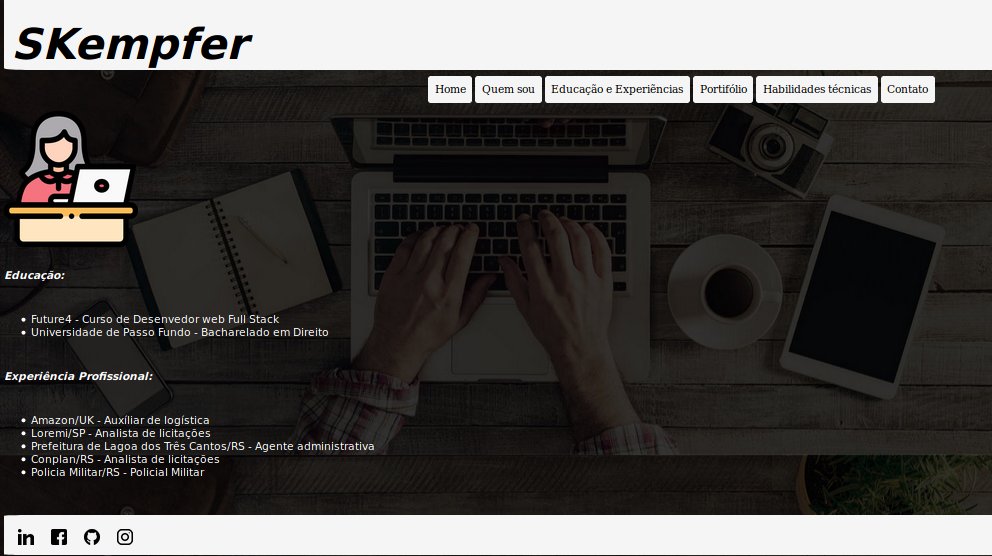

Projetos em parceria com a Future4:
- Projeto de seleção - Reprodução de um esboço estabelecido pela Future4, sendo preciso descobrir cores, comandos e recursos necessários para a reprodução.
- Confecção de site em formatode de sistema interno de confeitaria, com interação entre páginas: controle de estoque, controle de funcionparios, acrescentar produtos e inicial.

- Confecção de site em formato de portifólio, com interação entre as páginas, interção com as redes sociais, formulário de contato.
